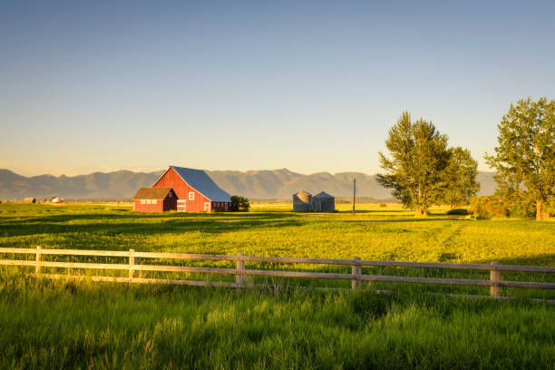

El origen
La historia de nuestro restaurante comienza con un sueño compartido en el seno de nuestra familia. Desde hace generaciones, las recetas y los sabores auténticos han sido el centro de nuestras reuniones y celebraciones. La idea de abrir un restaurante familiar surgió una noche, entre risas y anécdotas, cuando nos dimos cuenta de que queríamos compartir nuestra pasión por la cocina y la hospitalidad con el mundo.